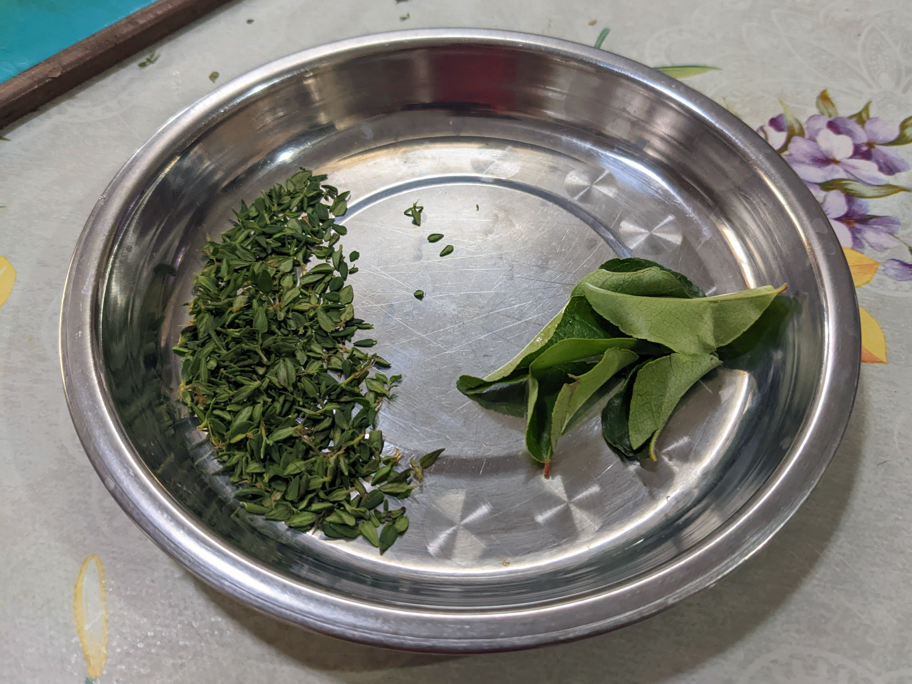
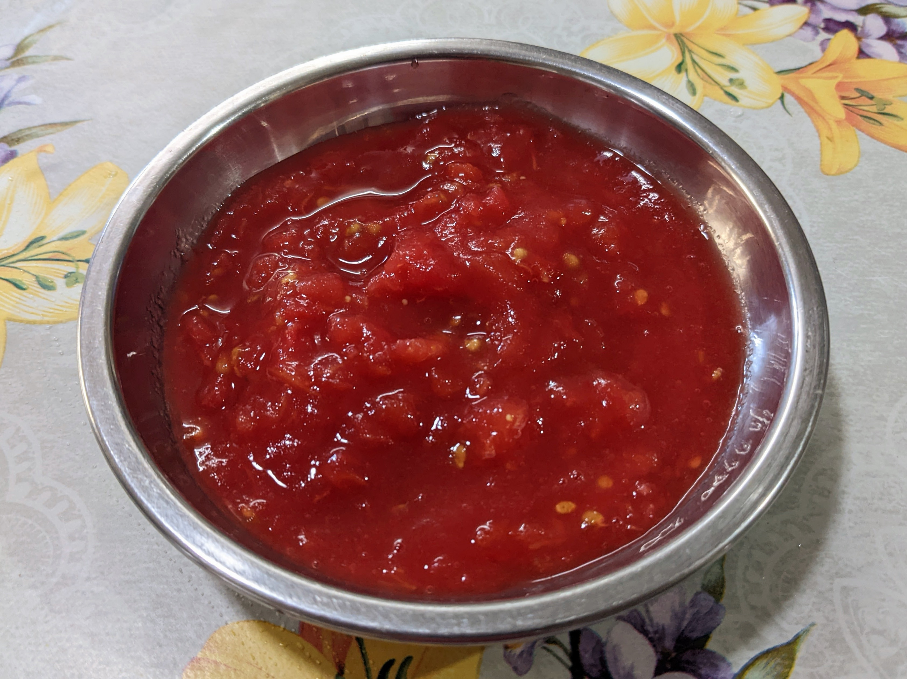
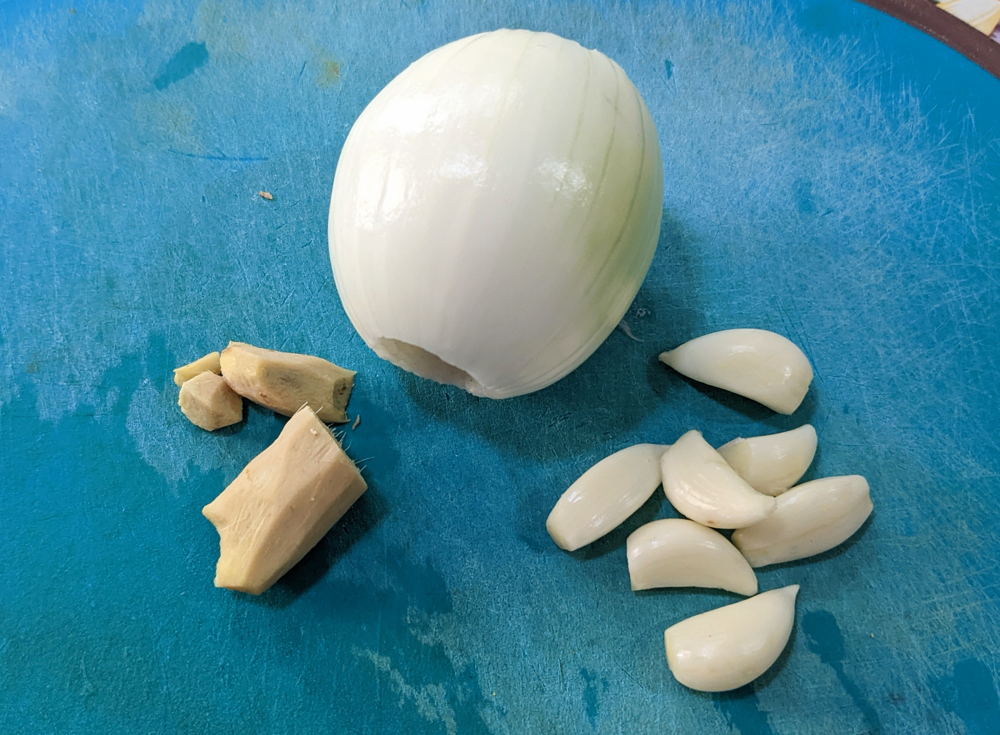
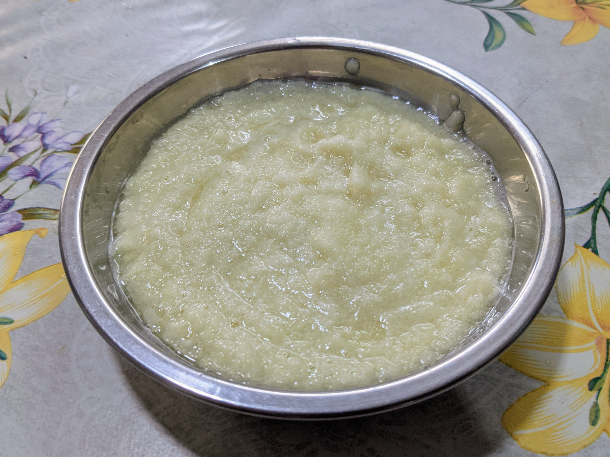
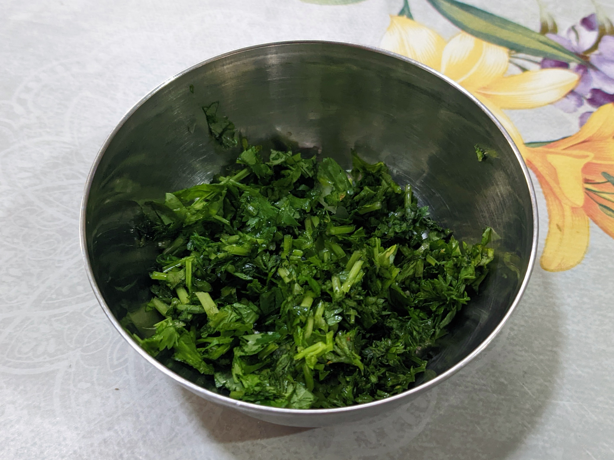

Cari banane

Ingredients
- 29 green (unripe) bananas
- 3 large tomatoes
- 2 onions
- 7 cloves garlic
- 1½ inch ginger
- 11 curry leaves
- Thyme leaves (~4 sprigs)
- Parsley leaves
- Coriander leaves
- Spring onions
- Masala powder
- Roasted cumin powder
- Haldi powder
Preparation
-
Rinse curry leaves and thyme leaves and remove them from sprigs.

-
Peel bananas and rinse under water.

-
Immerse tomatoes in boiling water for 1 min, then immediately in cold water. Peel and crush by hand.

- Paste: Crush 1 onion, all the ginger and all the garlic together in a mixer grinder to make a paste.


- Garnish: Finely cut coriander leaves, parsley leaves and spring onions.

Procedure
- Heat oil in frying pan.
- Add salt and bananas to oil and fry. Remove bananas once fried.
- Add thyme leaves, curry leaves and cut onion to oil.
- Add salt and fry until onions change colour slightly.
- Add crushed tomatoes, onion-ginger-garlic paste, haldi powder and cumin powder to pan.
- Leave to cook for a while then add water (since bananas will absorb water).
- (Cook some more time and add more salt if needed.)
- Add fried bananas to pan.
- Cook till sauce becomes a bit dry.
- Turn off flame and garnish with coriander leaves and spring onion.
- Serve hot.
- Enjoy your cari banane!